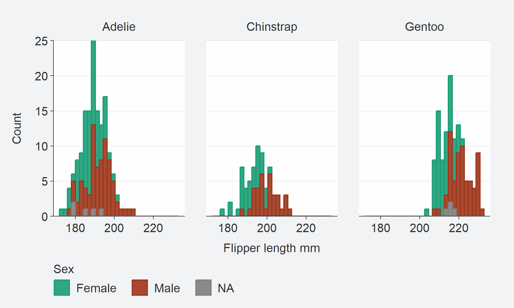
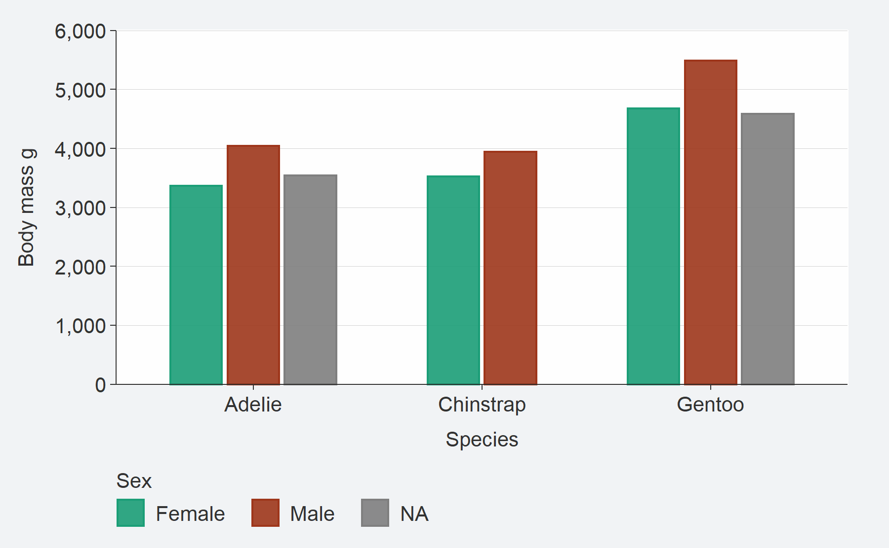
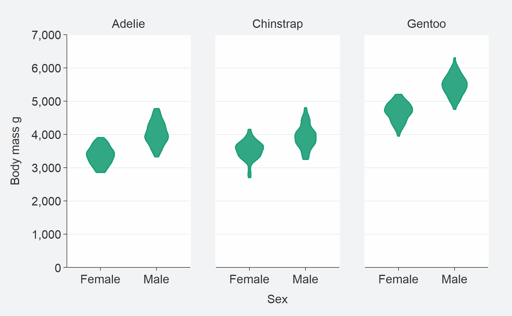
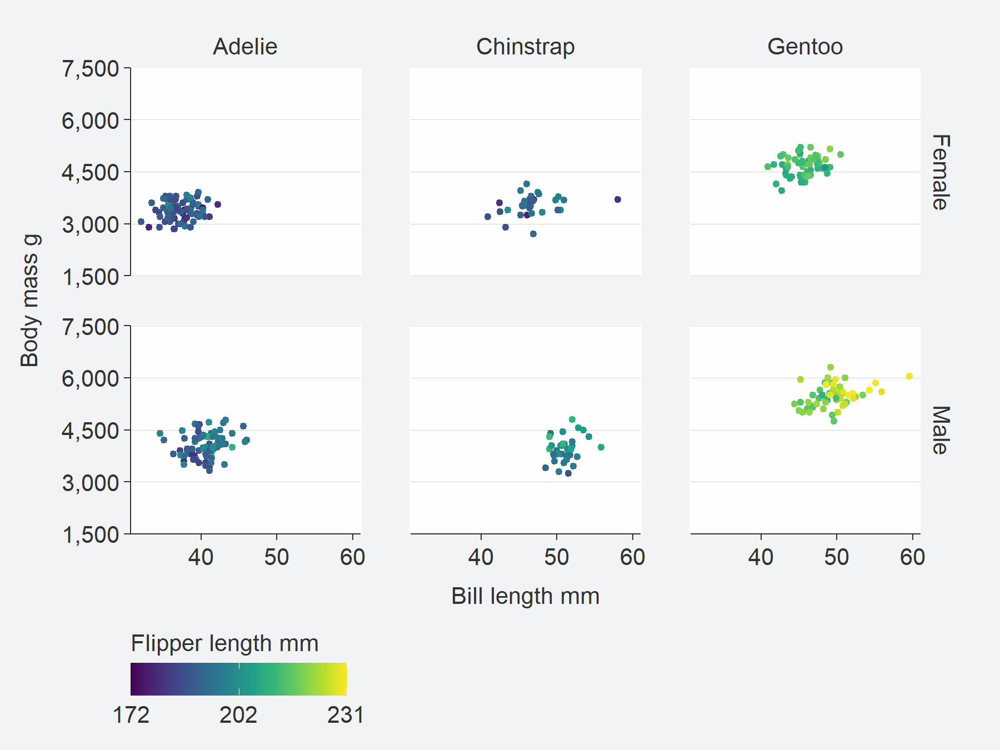
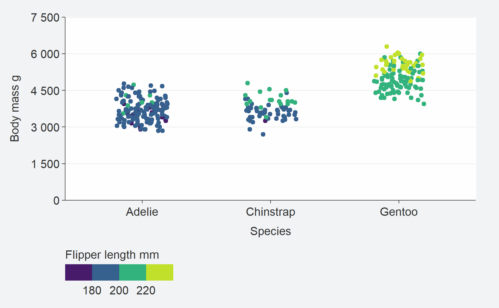
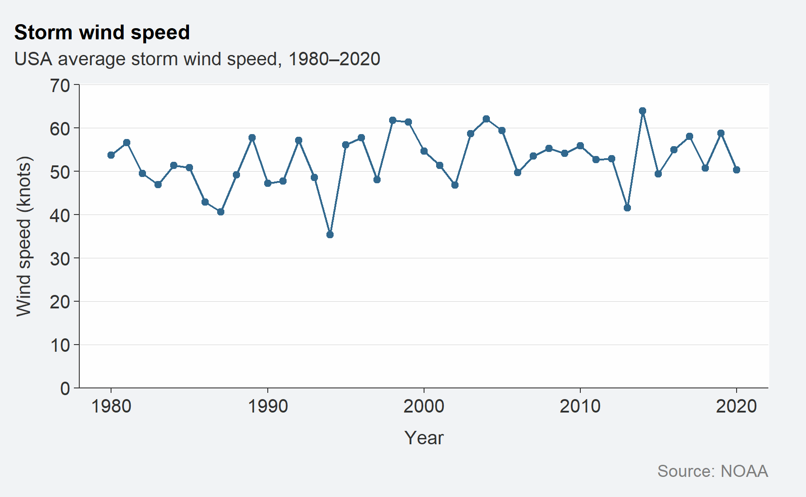
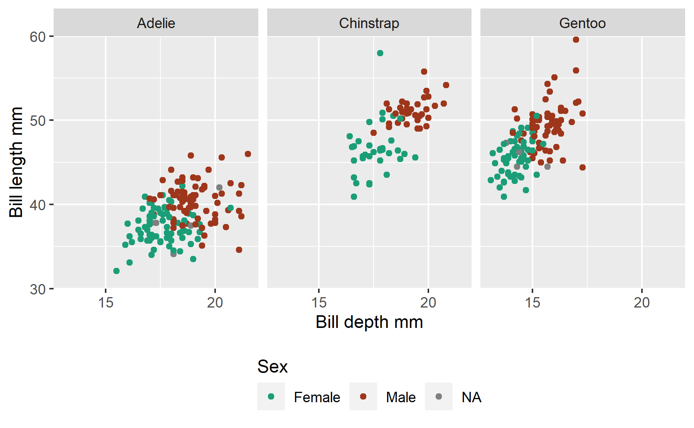
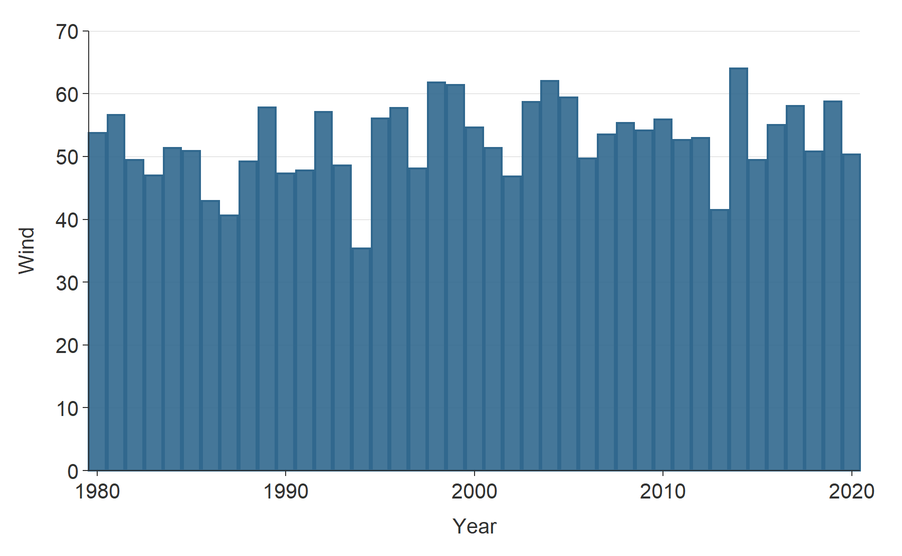

Overview
{ggblanket} is a package of wrapper functions around the amazing {ggplot2} package.
The objective is to make beautiful {ggplot2} visualisation simpler.
With this in mind, the {ggblanket} package:
- uses quick functions that wrap around a single geom
- merges col and fill aesthetics into a single col aesthetic
- provides colour customisation via a pal argument
- treats faceting as an aesthetic
- pushes x and y limits to the max of the x and y breaks by default
- arranges horizontal geom y and col labels etc to be in correct order
- converts titles and labels to sentence case and comma format by default
- provides arguments for scale adjustment and legend placement
- allows users to access all other non-aesthetic geom functionality
- changes default colours, alphas, widths and themes
Installation
Install either from CRAN with:
install.packages("ggblanket")Or install the development version with:
# install.packages("devtools")
devtools::install_github("davidhodge931/ggblanket")Examples
library(dplyr)
library(ggplot2)
library(ggblanket)
penguins2 <- palmerpenguins::penguins %>%
tidyr::drop_na() %>%
mutate(body_mass_kg = body_mass_g / 1000)
penguins2 %>%
ggplot() +
geom_histogram(aes(x = body_mass_kg)) 
penguins2 %>%
gg_histogram(x = body_mass_kg) 
penguins2 %>%
group_by(species, sex, island) %>%
summarise(body_mass_kg = mean(body_mass_kg)) %>%
ggplot() +
geom_col(
aes(x = body_mass_kg, y = species, fill = sex),
position = "dodge"
) +
facet_wrap( ~ island) +
theme(legend.position = "bottom")
penguins2 %>%
group_by(species, sex, island) %>%
summarise(body_mass_kg = mean(body_mass_kg)) %>%
gg_col(
x = body_mass_kg,
y = species,
col = sex,
facet = island,
position = "dodge",
col_legend_place = "b"
)
Other examples
storms %>%
group_by(year) %>%
summarise(wind = mean(wind, na.rm = TRUE)) %>%
gg_line(x = year,
y = wind,
y_zero = TRUE,
x_labels = ~.x,
title = "Storm wind speed",
subtitle = "USA average storm wind speed, 1975\u20132020",
y_title = "Wind speed (knots)",
caption = "Source: NOAA",
theme = gg_theme(y_grid = TRUE)) +
geom_point()
penguins2 %>%
gg_density(
x = body_mass_kg,
col = species,
facet = sex,
col_legend_place = "b")
penguins2 %>%
gg_jitter(
x = species,
y = body_mass_g,
col = flipper_length_mm,
col_intervals = ~santoku::chop_quantiles(.x, probs = seq(0, 1, 0.25)),
position = position_jitter(width = 0.2, height = 0, seed = 123),
y_zero = TRUE)

penguins2 %>%
gg_histogram(
x = body_mass_kg,
col = species,
facet = sex,
col_legend_place = "b",
pal = pals::brewer.dark2(3))
df <- data.frame(
trt = factor(c(1, 1, 2, 2)),
resp = c(1, 5, 3, 4),
group = factor(c(1, 2, 1, 2)),
upper = c(1.1, 5.3, 3.3, 4.2),
lower = c(0.8, 4.6, 2.4, 3.6)
)
dodger <- position_dodge(width = 0.75)
gg_blank(df, x = resp, xmin = lower, xmax = upper, y = trt, col = group) +
geom_col(position = dodger, width = 0.75, alpha = 0.9) +
geom_errorbar(position = dodger, width = 0.2, col = "#232323")Website
Click here for the {ggblanket} website.